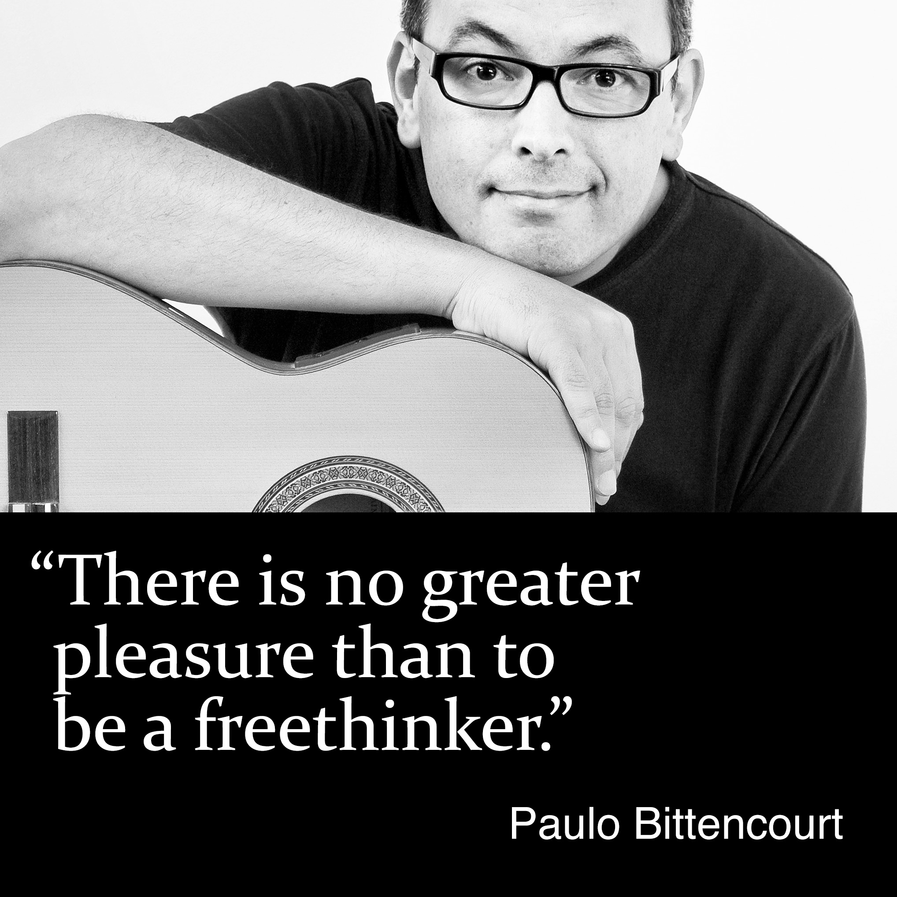

Who the hell is Paulo Bittencourt?
Professional Qualification
As a boy, I dreamed of becoming a comic book and animation artist. At the age of thirteen, I worked afternoons as an illustrator at a newspaper and a graphic arts company in my hometown, Castro, in Brazil.
In 1989, after five semesters at a Faculty of Theology in São Paulo, I abandoned my studies and moved to Europe, living temporarily in Portugal, France, England and Germany until, the following year, going to study German in Austria, where I then settled.
In 1992, without any musical training, I passed the entrance test for the Faculties of Solo Singing and Opera of the Conservatory of the City of Vienna. In my final examination, I performed Count Almaviva, in the opera The Marriage of Figaro, by Wolfgang Amadeus Mozart.
Professional Activity
During my studies, I sang in professional choirs, with performances in Austria, Israel, Italy, Japan and the United States, such as the Concentus Vocalis Choir and the Israel Philharmonic Orchestra, under the baton of Theodor Guschlbauer, in Tel Aviv and Jerusalem, the Arnold Schoenberg Choir and the Vienna Philharmonic Orchestra, under the baton of Seiji Ozawa, at the Vienna Konzerthaus and at the Carnegie Hall, in New York, and an independent production of Jacques Offenbach’s Orpheus in the Underworld, with a month-long tour of Japan.
As a soloist, I gave recitals in the Schubert Hall of the Vienna Konzerthaus, with works by Heitor Villa-Lobos, and in the Bösendorfer Hall, in Vienna, with works by Villa-Lobos and Oscar Lorenzo Fernández. I performed in various theaters, such as the Stadttheater Baden, in Austria, and the Vienna Akzent Theater, playing The King, in Carl Orff’s Die Kluge, The Father, in Engelbert Humperdinck’s Hansel and Gretel, Figaro, in Gioachino Rossini’s The Barber of Seville and Guglielmo, in Mozart’s Così Fan Tutte.
In 1995, I was hired by the largest German-language theater, the Vienna Burgtheater, where I sang and acted in plays such as Bertolt Brecht’s The Threepenny Opera, Offenbach’s Orpheus in the Underworld, Elfriede Jelinek’s Ein Sportstück, and William Shakespeare’s Troilus and Cressida.
Self-taught on the guitar, I’m an interpreter of the bossa nova↗︎ classics, such as the compositions of Antônio Carlos Jobim and Vinicius de Moraes and the songs of Chico Buarque.
As a voice-over artist, I narrate corporate videos of international companies, such as Plasser & Theurer, TGW Logistics, Doka and Lyoness.
As a photographer, my favorite subjects are street photography, portraits and landscapes. I was hired to photograph an orchestra and an opera singer during one of her performances at the Vienna Volksoper.
Books
I see myself as a freethinker and am the author of the books Liberated from Religion, Wasting Time on God and Com Zeus Não Se Brinca (Zeus Is Not to Be Played With).
Videos
I disseminate Freethought also through my YouTube channel↗︎.
Fight Against Discrimination
After having lived for 25 years in Austria, in 2015 I decided to be naturalized Austrian and discovered that permanent residence and perfect mastery of German were no longer enough. Some years before, the law had been changed to require foreigners to have a high income. Under the new law, 70% of Austrians themselves wouldn’t have the means to become naturalized. In view of this obvious incoherence, which, on top of that, is discriminatory, since it prevents legalized and integrated immigrants from voting, I was the subject of several TV, radio, newspaper and magazine reports. A speech about my case was delivered in the Austrian Parliament. SOS Mitmensch, an Austrian human rights organization, put up posters with my picture all over Vienna. Not long afterward, I became a citizen of Austria.
Bitencourt or Bittencourt?
Bitencourt with one tee or Bittencourt with two tees? Origin and meaning of the family name and surname Bittencourt.